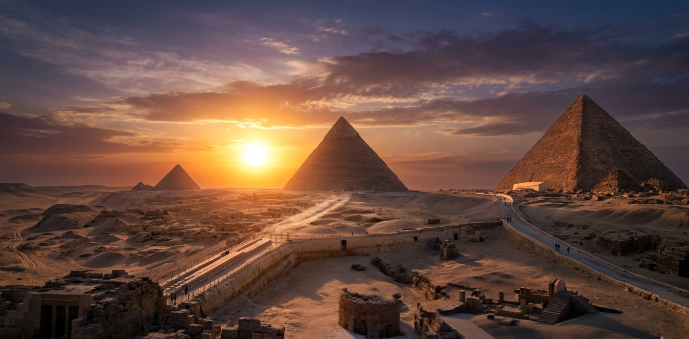

Civilization is the story of humanity’s growth—how people learned to build, create, and leave a lasting mark on the world. From the earliest tools to great cities, every civilization reflects the ideas and values of its people. Among the most fascinating of these is Ancient Egyptian civilization, which stands as a symbol of creativity, power, and mystery. Known for its massive pyramids, advanced knowledge in science and medicine, and strong belief in the afterlife, Ancient Egypt developed along the banks of the Nile River, which provided life and stability. This unique environment helped Egyptians build one of the longest-lasting and most influential civilizations in history, leaving behind a legacy that still amazes the world today.
As we stand before the three great pyramids—Khufu, Khafre, and Menkaure— we witness the timeless greatness of Ancient Egypt and the incredible achievements of its builders.